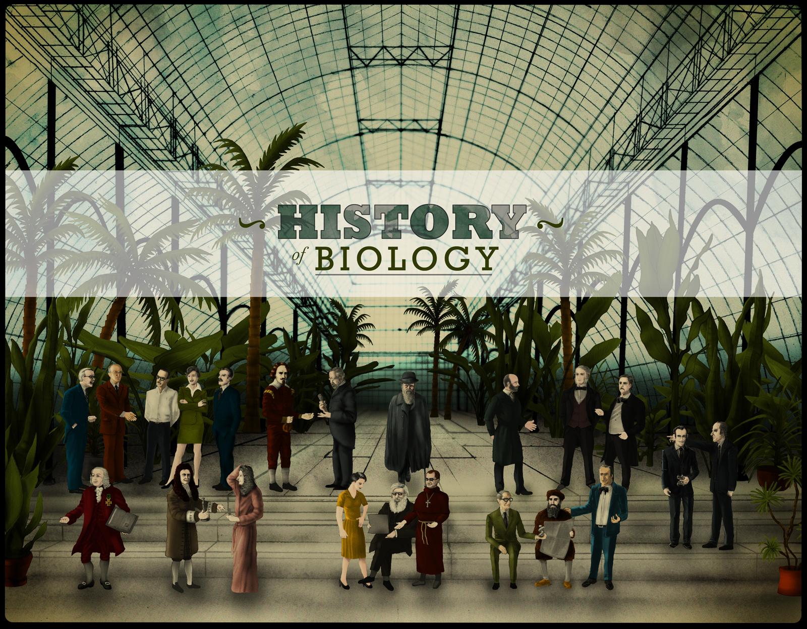
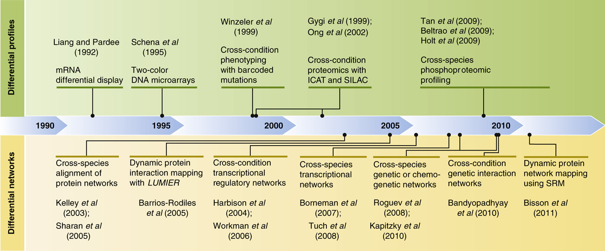

 The Greek philosophers, voracious in their curiosity, look with interest at the range of living creatures, from the humblest plant to man himself. A Greek name is coined by a German naturalist in the early 19th century for this study of all physical aspects of natural life - biology, from bios (life) and logos (word or discourse). It is a subject with clear subdivisions, such as botany, zoology or anatomy. But all are concerned with living organisms. The first man to make a significant contribution in biology is Alcmaeon, living in Crotona in the 5th century. Crotona is famous at the time for its Pythagorean scholars, but Alcmaeon seems not to have been of their school. Alcmaeon is the first scientist known to have practised dissection in his researches. His aim is not anatomical, for his interest lies in trying to find the whereabouts of human intelligence. But in the course of his researches he makes the first scientific discoveries in the field of anatomy. The subsequent Greek theory, subscribed to even by Aristotle, is that the heart is the seat of intelligence. Alcmaeon reasons that since a blow to the head can affect the mind, in concussion, this must be where reason lies. In dissecting corpses to pursue this idea, he observes passages linking the brain with the eyes (the optic nerves) and the back of the mouth with the ears (Eustachian tubes).Aristotle may be wrong about the brain being in the heart, but in general he gives a far more complete and well observed account of biology than any other Greek philosopher.He inaugurates scientific zoology in his reliance on careful observation. He is particularly acute in his study of marine life, having much to say on the habits of fishes, the development of the octopus family, and the nature of whales, dolphins and porpoises. He is also a pioneer in attempting a system of classification. Observing an unbroken chain of gradual developments, as the life of plants shades into that of animals, he acknowledges the complexity of the subject and seems almost to glimpse the pattern of evolution. Aristotle's notes on botany are lost, but many of his observations no doubt survive in the earliest known botanical text - nine books On the History of Plants written by Aristotle's favourite pupil, Theophrastus. Writing in about 300 BC, Theophrastus attempts to classify plants, as well as describing their structure, habits and uses. His remarks are based on observations carried out in Greece, but he also includes information brought back from the new Hellenistic empire in the Middle East, Persia and India, resulting from the conquests of Alexander the Great. The influential errors of Galen: 2nd century AD The newly appointed chief physician to the gladiators in Pergamum, in AD 158, is a native of the city. He is a Greek doctor by the name of Galen. The appointment gives him the opportunity to study wounds of all kinds. His knowledge of muscles enables him to warn his patients of the likely outcome of certain operations - a wise precaution recommended in Galen's Advice to doctors. But it is Galen's dissection of apes and pigs which give him the detailed information for his medical tracts on the organs of the body. Nearly 100 of these tracts survive. They become the basis of Galen's great reputation in medieval medicine, unchallenged until the anatomical work of Vesalius. Through his experiments Galen is able to overturn many long-held beliefs, such as the theory (first proposed by the Hippocratic school in about 400 BC, and maintained even by the physicians of Alexandria) that the arteries contain air - carrying it to all parts of the body from the heart and the lungs. This belief is based originally on the arteries of dead animals, which appear to be empty. Galen is able to demonstrate that living arteries contain blood. His error, which will become the established medical orthodoxy for centuries, is to assume that the blood goes back and forth from the heart in an ebb-and-flow motion. This theory holds sway in medical circles until the time of Harvey. Science's siesta: 8th - 15th century In the profoundly Christian centuries of the European Middle Ages the prevailing mood is not conducive to scientific enquiry. God knows best, and so He should - since He created everything. Where practical knowledge is required, there are ancient authorities whose conclusions are accepted without question - Ptolemy in the field of astronomy, Galen on matters anatomical. A few untypical scholars show an interest in scientific research. The 13th-century Franciscan friar Roger Bacon is the most often quoted example, but his studies include alchemy and a strology as well as optics and astronomy. The practical scepticism required for science must await the Renaissance.